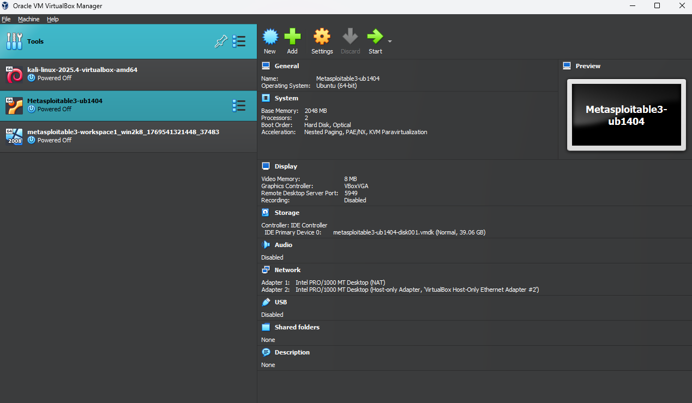
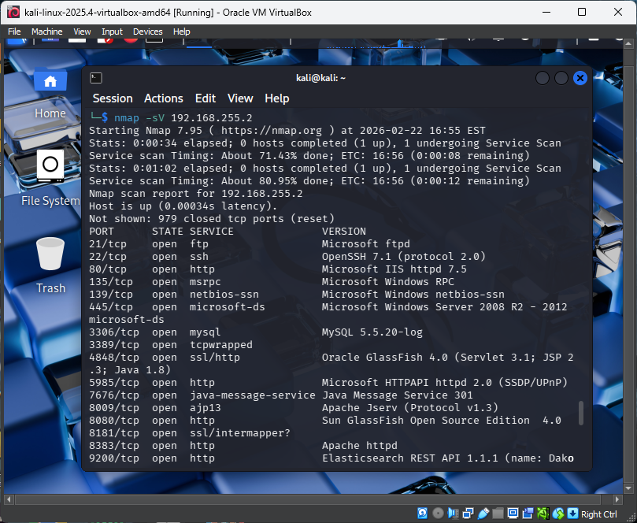
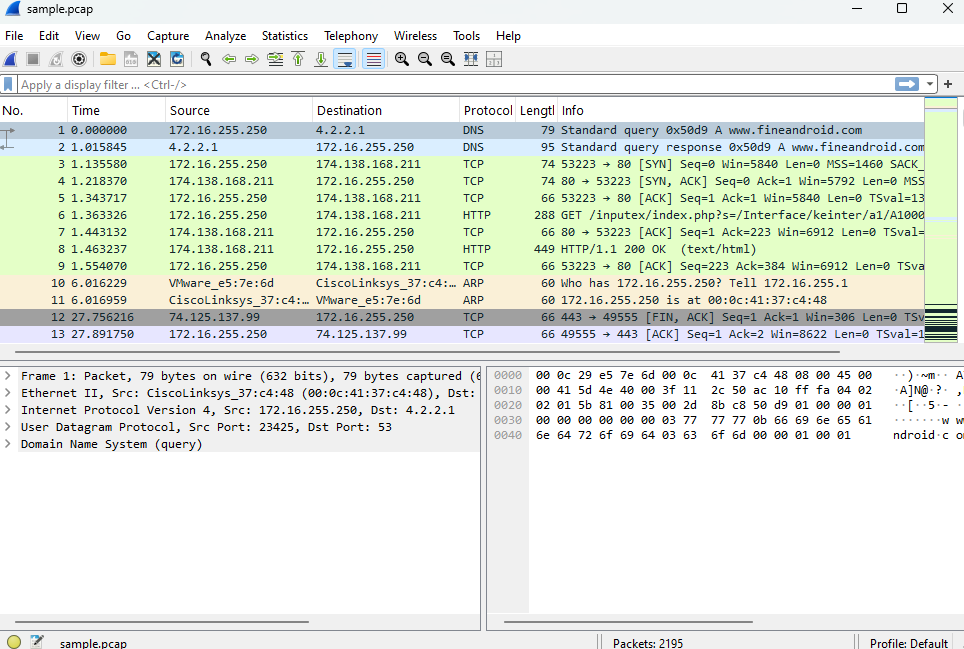

Home Cybersecurity Lab
Built a virtual lab using Kali Linux, Windows Server, and Metasploitable to practice security testing in an isolated environment.
Information Security • Cybersecurity • Data Analytics
I am an Information Science student focused on Information Security. My portfolio highlights cybersecurity labs, network scanning, web security testing, packet analysis, password auditing, Python, SQL, and research based coursework.
$ whoami Kalyb Williams $ focus Cybersecurity Information Security Data Analytics $ tools Kali Linux Nmap Wireshark Metasploit DVWA VirtualBox Python SQL
About Me
I use lab environments to practice real security workflows in a safe and ethical way. My work includes reconnaissance, enumeration, web vulnerability testing, packet analysis, password auditing, and technical writing. I care about learning the process, documenting what happened, and turning mistakes into better troubleshooting habits.
Featured Work

Built a virtual lab using Kali Linux, Windows Server, and Metasploitable to practice security testing in an isolated environment.

Performed host discovery, port scanning, service detection, and operating system fingerprinting with Nmap.

Reviewed DNS, HTTP, TCP, ARP, and NTP traffic using Wireshark packet details and hex analysis.
Skills
My strongest areas are cybersecurity labs, network security, web security testing, packet analysis, and documentation.
Contact Me